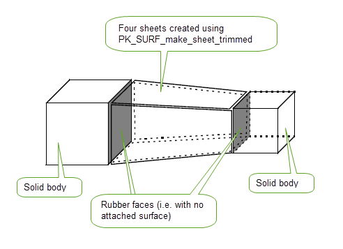
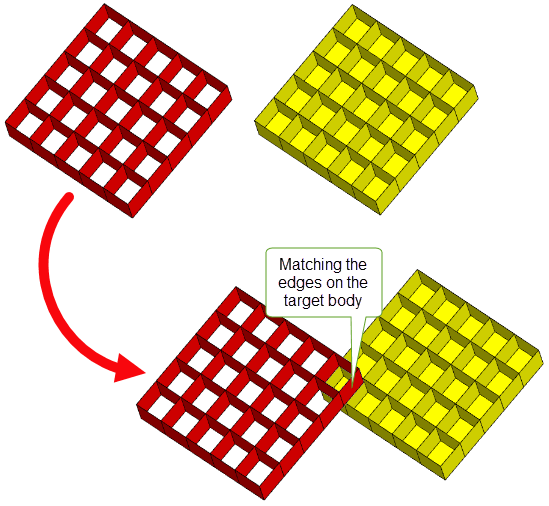

| |
Sewing and Knitting |
| <<< Sheet Modeling | Chapters | Mid-Surface Generation >>> |
A collection of sheet bodies can be sewn together by gluing them where their edges meet, resulting in a single connected body. Parasolid sews together all pairs of edges which are less than a specified distance apart. Parasolid also supports knitting operations, which are similar to sewing but can be used if you want to fuse combinations of bodies together. This chapter discusses the operations as follows:
Sheet sewing is performed using PK_BODY_sew_bodies, which receives the array of sheets that are required to be sewn together, and a lower bound on the width of gaps that are allowed to remain in the result(s). The first sheet in the array is the target sheet. On completion of the sewing operation the target sheet is enlarged by having all or some of the given sheets sewn to it, and information is provided on which sheets were not sewn to the target.
Figure 47-1 Sheet sewing input and output data
Parasolid sewing avoids, where possible, sewing a new sheet onto the target by an edge match less than the stated gap width bound. The reason for doing this is, that doing so may lead to mistakenly inverting the sheet about to be attached. This arises where the match forms a short boundary to an overlap of the target and candidate sheet. Parasolid sewing takes the reasonable view that there should be some match somewhere that is longer than the gap width bound, i.e. it expects to find edges that are larger than the gaps it has been warned about. When such longer edges are found, the sheet is included into the target and sewing then proceeds on the previously ignored edges.
Parasolid sewing checks to see if all edges are shorter than the gap width bound. If this is the case, then it sews along the first encountered match even if it is short.
Where possible during the sewing operation, Parasolid attempts to remove short edges that become degenerate when tolerances are applied while fusing sheet boundaries together. Examples of this are:
Figure 47-2 Short edges degenerating to vertices
Figure 47-3 Short edges created by the algorithm degenerating to vertices
|
Note: PK_BODY_sew_bodies does not perform any body checking on the resultant body. You are advised to perform a subsequent check in your application code after the sewing operation has completed. In addition, it is your application’s responsibility to resolve any face-face inconsistencies that may result from the sewing operation. |
|
Note: This function offers partial support facet geometry. See PK_BODY_sew_bodies for more information. |
Several options are available to influence the outcome of using PK_BODY_sew_bodies on a collection of sheet bodies. Each is listed below together with a brief explanation of the manner in which the result is affected by its use.
If set to PK_LOGICAL_true this option enables PK_BODY_sew_bodies to return several disjoint composite sheets in cases where the sheets that can be sewn together do not form a single cohesive composite sheet. Basically everything that can be sewn together, is. All of the products of this activity are returned in the
sewn_bodies
return argument.
When set to PK_LOGICAL_false the only sewing operations that are carried out are those that lead to sheets being sewn, directly or indirectly, onto the first sheet presented in the argument 'bodies'. Only the single composite sheet which includes the target are returned.
If set to PK_LOGICAL_true, PK_BODY_sew_bodies assumes that the input data is intended to produce a manifold result. This allows the algorithm to assume that, if more than two edges are within
gap_width_bound
of each other, then only the two closest are intended to be matched together. Sewing of this closest pair is only carried out if this won't lead to an edge that tolerantly clashes with the eliminated candidates. Where the group doesn’t have a pairing distinct from the remainder, the entire group is collected together and reported as a non-manifold problem (see below).
When set to PK_LOGICAL_false, PK_BODY_sew_bodies makes no attempt to separate out a pair of edges from a larger group, but instead immediately reports the whole group as non-manifold.
This option permits the application to state a preference for the body type of the results that are produced by the sewing operation. It was envisioned as a means by which applications could prefer composite sheets having no laminar boundary edges to be returned as closed sheets rather than solid bodies. However the options permit the application to state a preference for:
Default: PK_BODY_sewing_any_c.
|
Note: When an input body has no laminar boundary, this option permits PK_BODY_sew_bodies to change the result body type, where appropriate, to match the specified preference. |
In Parasolid, the sewing functionality can attempt to remove duplications of sheets. If duplicate sheets are present then the result of the sewing operation is likely to include a large number of reported non-manifold problems. The sewn bodies additionally have a high probability of incorporating pairs of (duplicated) faces sewn together back-to-back. Such bodies are corrupt, and therefore almost useless in later modeling operations.
When you suspect your data contains duplicated sheets then you should use the
duplicate_removal
option, which can take the following values:
|
Identify and remove possible duplicates to within Parasolid precision. |
|
|
Identify and remove duplicates to within the tolerance specified by the |
PK_BODY_sewing_remove_cert_c is more successful at identifying duplicates than PK_BODY_sewing_remove_poss_c, but is also slower.
The strategy for removing possible duplicate sheets reliably, and without expensive coincidence checking is:
The unused members of the classes are returned in the array of unsewn bodies.
Parasolid sewing does not handle examples of duplicated candidates where not all of the sheet boundaries are shared. Parasolid is in no position to judge the relative merits of two equally plausible candidates.
This option controls the sewing of edges whose fins belong to the same loop. It only has an effect if this loop is an inner loop of a face. If
sew_up_inner_loops
is PK_LOOP_sew_up_loop_c, and the edges are less than gap width apart, the edges are sewn together. It is possible that this will close the loop.
If set to PK_LOOP_sew_up_no_c, such edges will not be sewn together even if they are less than gap width apart.
Default: PK_LOOP_sew_up_loop_c.
Figure 47-4 Sewing within the inner loops of a face
You can control the tolerance set on sewn edges using the
reduce_edge_tolerance
option as follows:
The level of success of the sewing operation is determined by the information returned in the arrays
unsewn_bodies
and
problem_groups
together with an evaluation, by the application, of the laminar boundary loops present on each result returned in the array
sewn_bodies
:
unsewn_bodies
returns those bodies that had no other presented sheet body sewn onto it
problem_groups
return, in groups, those edges that are associated with a single problem found during sewing
The
unsewn_bodies
array is fairly self explanatory. However it should be noted that the appearance of a sheet in this array does not imply that it has remained unmodified by the sewing operation. The unsewn sheet may have had some of its edges considered as unsuccessful candidates for sewing. In such cases the edges may have been split to fit the region of the match, but they were subsequently rejected in favour of better nearby pairings. Some edges of the unsewn sheet may also have been deleted in a similar process. For example consider the following three sheets:
Figure 47-5 How the tolerance bound works
Given that sheet A is the target (by being handed in at the head of the array), the result of handing A, B and C to PK_BODY_sew_bodies with default options is that sheets A and B are sewn together. Sheet C is returned as unsewn, but the edge on it nearest sheet A has been split at X while considering matching options in the shaded region. Incidentally the neighboring edges on sheets A and B are also split at Y during the same process of examining the shaded area.
The problem group array holds structures, each of which is an array of edges with an accompanying token indicating the type of problem encountered while dealing with these edges. These tokens, together with their standard interpretations are:
treat_as_manifold
affects the reporting of such problems (see above).Immediate problems aside, the application has to check that the results have the boundaries that were expected to arise from the sewing operation. Despite limited opportunities to make some judgements on the boundaries of a result (e.g. the result of a call that stated a preference for a solid body might be presumed to have no laminar boundary edges), PK_BODY_sew_bodies makes no attempt to do this. However some support for the application to examine sheet boundaries is provided through PK_BODY_find_laminar_edges which presents easy access to this information.
While PK_BODY_sew_bodies does its best to deal with the sheet geometries passed to it, it obviously does have limitations. In order to achieve a high success rate when using this function, it is advisable to bear these limitations in mind when preparing the sheets to sew together.
Figure 47-6 Boolean B-surface sheets together
Figure 47-7 Examples of vertices (not) bounding edge-edge matches
The sewing algorithm has a greater chance of success if it can select the smallest appropriate tolerance for the edges that it fuses together. To facilitate this, it is better that the laminar boundary edges of the sheet bodies handed to PK_BODY_sew_bodies have as small a tolerance as possible. Of course no edge tolerance at all would be preferable.
Vertex tolerances are less of a problem since sewing adjusts these to be as small as possible without violating model consistency. In summary sheets are preferred in descending order left to right in the following diagram:
Figure 47-8 The preferred presentation when sewing sheets
In the course of finding and grouping bundles of candidate matches to an edge, the edge is split at many points. These points are projections on to the edge of neighboring boundary vertices lying within the gap width bound of it. The average number of split points rises roughly as the square of the gap width bound (assuming a uniform distribution of vertices on a locally 2-D problem). Short edges near wide gaps may be induced by neighboring vertices on smaller scale edges associated with correspondingly smaller gaps.
Figure 47-9 Showing why short edges are hard to sew
‘Necklaces’ of many small-scale edges can provide an overabundance of vertices. Avoid these where possible, perhaps rebounding the surfaces with a single curve that approximates a composite curve constructed from the geometries of the edges in the necklace.
Where they are unavoidable (perhaps on a seriously non-G1 surface) there is always the chance that sewing sheets with necklace edges using a gap width bound relatively significantly smaller than the edges in the necklace may work. Doing this as an initial phase of the sewing operation may help the larger problem.
Parasolid sewing has some limited ability to ignore 2 and 3 edged examples of these thin sliver sheets.
If the collection of sheet bodies to be sewn contains a wide range of gap-widths, then the most effective method of sewing them together is to perform several passes of the sewing operation. This technique is known as incremental sewing.
The
number_of_iterations
and
iteration_bounds
options to PK_BODY_sew_bodies are used to control incremental sewing, as follows:
|
The number of iterations of the sewing operation to perform. Default is 1 - that is, incremental sewing is not performed. |
|
|
An array of different gap-width bounds used when
If this array is NULL (default) then Parasolid generates an increasing range of gap-width bounds, the largest of which is the
If the |
Where Parasolid generates a range of gap-width bounds for use in incremental sewing, sheets are first sewn using the smallest gap-width bound. The resulting bodies are then sewn using a larger gap-width bound. This is repeated until all the sheets are sewn together or the user-supplied gap-width bound is reached. Sheets that are closer together are sewn together in earlier passes, when the gap-width bound is small, and sheets that are further apart are not sewn together until later passes (if it all).
In cases where you provide your own
iteration_bounds
, sheets are sewn using gap-width bounds in the order in which they are provided.
Sometimes the sheet bodies you want to sew together may contain a wide range of gap-width bounds that cannot be easily predicted. If you are attempting to sew a number of sheets together in these conditions, you can increase the success rate of sewing operations by using incremental sewing, rather than specifying a gap-width bound that is large enough to pull all the sheets together in one pass.
Since regions where sheets are close together may be disconnected (creating “islands” of sheets that are close together), we recommend you use the
allow_disjoint_result
option whenever incremental sewing is performed if you want to retain the detail contained in those regions.
Using
allow_disjoint_result
together with incremental sewing ensures that all sheets that are sewn benefit from the greater accuracy of smaller gap-width bounds, rather than just those that are in the same “island” as the target, as shown in
Figure 47-10.
Figure 47-10 Sewing “islands” of disconnected sheets using
allow_disjoint_result
When sewing together faces that may come from an assembly, you can use the
assembly_sewing
option in PK_BODY_sew_bodies to improve the results and execution speed.
By default, when more than two candidate edges would clash in the output and none can be discarded without throwing away a sheet body of significant size, PK_BODY_sew_bodies cannot choose which two edges are the correct ones to sew. However, if you know that the data come from a valid assembly, Parasolid can make assumptions about the relative configurations of the faces owning those edges. It may then be possible to determine which of several edges can be sewn together. The
assembly_sewing
option lets you choose between two different methods:
|
If |
|
|
If face orientation is not enough to determine a unique solution, then you can set |
By default, PK_BODY_sew_bodies assumes that the received bodies come from a single valid piece part.
Figure 47-11 shows a simple example where three faces, shown in cross-section, can potentially be sewn together at the end points indicated. If
assembly_sewing
is set to PK_BODY_sewing_assy_orient_c, then PK_BODY_sew_bodies assumes the data comes from a valid assembly, and examines the orientation of each face. From this information, it deduces that the red and blue faces are part of the same component of the assembly, and sews the edges appropriately.
Figure 47-11 Sewing together assemblies based on face normal information
Figure 47-12 shows a more complex example that PK_BODY_sewing_assy_orient_c could not solve, because the orientation of the faces is not consistent. If
assembly_sewing
is set to PK_BODY_sewing_assy_extend_c, the number of shared boundary edges is also examined. In this case, face B shares more boundary edges with face A than face C does, and so face B and face A are assumed to be part of the same component of the assembly and are sewn together, correcting the orientation of face B at the same time.
Figure 47-12 Sewing assemblies based on shared laminar boundaries
Note: The
assembly_sewing
option works best for data that comes from valid assemblies. In particular, components in the assembly are assumed not to clash with each other (other than by abutting). |
The following conditions apply when
assembly_sewing
is enabled:
If general topology is enabled in a Parasolid session, you can use the
general_sewing
option in PK_BODY_sew_bodies_o_t to sew general input bodies together. It takes the following values:
|
If the input bodies contain general topology, the sewing operation fails with PK_ERROR_unsuitable_topology. (Default) |
|
|
If general topology is enabled, general bodies are sewn wherever their laminar boundaries meet in a locally manifold configuration. Figure 47-13 illustrates this. If general topology is disabled, all manifold bodies are converted into sheets and all non-manifold bodies are returned as unsewn bodies. |
Figure 47-13 shows two examples in which general inputs are sewn together successfully to create single general bodies. In the first example, two T-sheets are sewn together to create a single general body containing six faces. The second example shows how you can form a Moebius strip by sewing two faces together to produce a single general body with two faces.
Figure 47-13 Sewing locally manifold general bodies when general topology is enabled
Note: If you use this option, then
assembly_sewing
must be left at its default setting. |
See Section 15.7, “General bodies”, for more information on enabling and using general topology in Parasolid.
Where sheet boundaries have not been sewn as expected, or when some measurement of actual gap size is required in advance of using PK_BODY_sew_bodies, use PK_EDGE_find_deviation_2. This function calculates either the maximal distance between a pair of matching edges, or multiple distance samples between those edges, as shown in Figure 47-14.
Figure 47-14 Determining distances and points on unsewn edges
The distance that PK_EDGE_find_deviation_2 measures is the distance between the two edge geometries. To find a corresponding gap-width, subtract the sum of the two edge precisions from the returned distance.
Measurements taken using PK_EDGE_find_deviation_2 are only a guide to predicting the result of applying PK_BODY_sew_bodies. In practice, matching and splitting edges, together with progressive application of local precisions, occasionally results in a marginally different assessment of distance during sewing.
Sewing and knitting are used to fuse bodies together, but the two methods give different results as described below:
The different types of knitting are:
A guide for using the types of knitting is shown below:
|
Matched pairs of edges or vertices from wire, sheet, solid and general bodies. |
The differences between the two knitting types (PK_BODY_{find/apply}_knit_pattern and PK_BODY_knit) are in the inputs and the allowed knitting operations using wire, sheet solid and general bodies.
For the knit pattern the inputs are sheets and solid bodies (except in circumstances where a knit pattern is directly supplied by the user). The functionality that is exclusive to the knit pattern type is:
For the supplied topologies the inputs are wire, sheet, solid and general bodies. With this knitting type you can knit solids with no requirement for knitted edges on solids to have two faces, one with a surface and one rubber. The functionality that is exclusive to the supplied topologies includes:
See Figure 47-15 Knitting two solid bodies and four sheets into a single body.
The recommended process for knitting sheet and solid bodies together using a knit pattern, is to set a suitable tolerance on edges and vertices to be knitted, identify connectivity information and then apply the connectivity information.
The process is described in the following table:
|
Use PK_EDGE_set_precision_2 and PK_VERTEX_set_precision to set edge and vertex tolerance in the sheets to knit together. For details, see Section 47.3.2.1. |
|
|
Use PK_BODY_find_knit_pattern to infer the connectivity between a collection of sheets created with PK_SURF_make_sheet_trimmed, using the geometry of the edges. For details, see Section 47.3.2.2. There may be circumstances where you can supply your own knit pattern. If the knit pattern is known, this information can be supplied from the application using PK_BODY_knit_pattern_t structure. In such circumstances and for performance optimisation we recommend that you omit this part of the process and use PK_BODY_apply_knit_pattern to supply this information directly. (Optional) For details, see Section 47.3.2.3. |
|
|
Use PK_BODY_knit_pattern_t structure to supply the connectivity information to PK_BODY_apply_knit_pattern. For details, see Section 47.3.2.4. If you have supplied your own knit pattern you can use PK_BODY_knit_pattern_t structure to supply the connectivity information to PK_BODY_apply_knit_pattern. (Optional) For details, see Section 47.3.2.4. |
An example of knitting sheets and solid bodies together is shown in Figure 47-15.
Figure 47-15 Knitting two solid bodies and four sheets into a single body.
|
Note: When knitting solid bodies, all edges which are intended to appear in the knitting pattern must have one adjacent face with a surface attached and one without. |
The first step when knitting bodies is to set a suitable model tolerance. You can do this using PK_EDGE_set_precision_2 and PK_VERTEX_set_precision, which are described in more detail in Chapter 16, “Session And Local Precision”.
The tolerance you set is used by PK_BODY_find_knit_pattern to determine which edges in the supplied bodies need to match in order to successfully knit the bodies. To ensure that two edges match correctly, the curve attached to at least one of the edges must lie precisely within the tolerance tube of the other edge, as shown in Figure 47-16. You should set an appropriate tolerance, if you need to, for the data you want to knit together.
Figure 47-16 Setting tolerance to ensure that edges match correctly.
|
Note: You can use PK_EDGE_imprint_point, if you need to imprint bounding vertices along some of the edges you want to knit together. PK_BODY_find_knit_pattern has the same limitations in locating subsets of edges to compare as PK_BODY_sew_bodies, and so bounding vertices must be supplied as shown in Figure 47-7. |
PK_BODY_find_knit_pattern infers the connectivity of a set of sheet or solid bodies that you want to knit together. It returns this connectivity information in the form of a knit pattern that can be passed to PK_BODY_apply_knit_pattern.
PK_BODY_find_knit_pattern receives the following arguments:
|
|
|
An array of bodies for which to find a knitting pattern. Faces in the body that you expect to survive the knitting operation should have geometry attached (i.e. should not be rubber). Faces that you do not expect to survive the operation may be rubber, as shown in Figure 47-15. |
PK_BODY_find_knit_pattern returns the following arguments:
|
The connectivity information of those bodies in bodies that could be connected. |
|
|
Warning: To create a knit pattern that can be successfully applied using PK_BODY_apply_knit_pattern, there must be no interference between the supplied bodies other than along the common edge geometry, and no more than two bodies sharing common boundaries. |
If your application already knows the connectivity information of the bodies to be knitted, then you can supply your own knit pattern. This can be supplied using the PK_BODY_knit_pattern_t structure, and has the following fields:
Use PK_BODY_apply_knit_pattern to fuse together the edges specified in the knitting pattern. The edges specified in the matches array of the knitting pattern are deleted after knitting has completed.
PK_BODY_apply_knit_pattern receives the following arguments:
|
The target body into which the result of the knit operation is placed. |
|
|
|
Options controlling the final form of body. The following options are available:
See the documentation for PK_BODY_apply_knit_pattern_o_t for more information. |
|
Information about the result of the knit operation. This structure contains any edges that could not be knitted together, as well as status information about the operation. |
|
Note: PK_BODY_apply_knit_pattern does not perform any body checking on the resultant body. You are advised to perform a subsequent check in your application code after the knitting operation has completed. |
Bodies can be joined together using PK_BODY_knit. This function takes an array of topologies which you want to fuse together to create a single result body. The supplied topologies must be edges (manifold or non-manifold) or vertices. It receives and returns the following arguments:
|
PK_BODY_knit joins a number of bodies together using 1:1 matching where one topology from the
topols
array is knitted to the topology in the
matches
array with the same index. Topology listed in the
topols
array survives the operation, whereas topology in the
matches
array is removed. The original edge tags from the input edges are preserved during this operation.
Note: If general topology is enabled for the session, non-manifold bodies are supported. For mixed geometry the result must be locally manifold, if the supplied
topols
and
matches
are edges. |
Figure 47-17 Knitting bodies together by matching vertex topologies.
For classic bodies, the supplied
topols
and their corresponding entity in
matches
must be coincident, allowing for any tolerances applied to those entities.
If the geometry attached to an entity in
matches
is not the same as that attached to its corresponding entity in
topols
, a Parasolid Report of type PK_REPORT_record_1_inconsistent_geom_c is generated.
See Chapter 11, “Using Reports”, for more information about the Parasolid Report mechanism.
Figure 47-18 Knitting matched edges
For facet matches, unlike classic matches, input meshes may be adjusted to ensure they meet accurately at the matched topologies.
| <<< Sheet Modeling | Chapters | Mid-Surface Generation >>> |